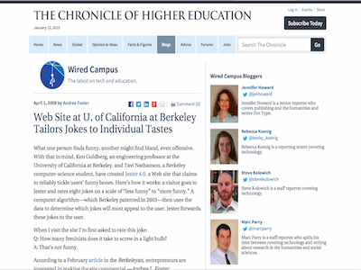
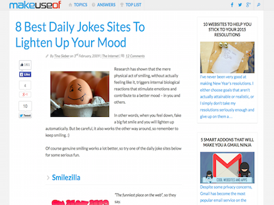

Credits
For details on the algorithm behind Jester, please see:
Eigentaste: A Constant Time Collaborative Filtering Algorithm.
Ken Goldberg, Theresa Roeder, Dhruv Gupta, and Chris Perkins. Information Retrieval, 4(2), 133-151. July 2001.
Jester 4.0 Project Team:
Ken Goldberg, Tavi Nathanson, Ephrat Bitton
Jester 3.0 Project Team:
Ken Goldberg, Robert Hennessy
Jester 2.0 Project Team:
Ken Goldberg, Dhruv Gupta, Chris Perkins
Jester 1.0 Project Team:
Ken Goldberg, Dhruv Gupta, Hiro Narita, Mark DiGiovanni
We Thank
Richard Wallace, Hal Varian, Vivek Sanghi, Carol Kirschenbaum,
Avi Goldberg, David Pescovitz, Bob Farzin, Adam Jacobs, Derek Poon, and Cathie Walker
Press
California Magazine

Wired Campus
MakeUseOf
More Information
Algorithms, Models and Systems for Eigentaste-Based Collaborative Filtering and Visualization
Tavi Nathanson. Master's thesis, EECS Department, University of California, Berkeley, May 2009.